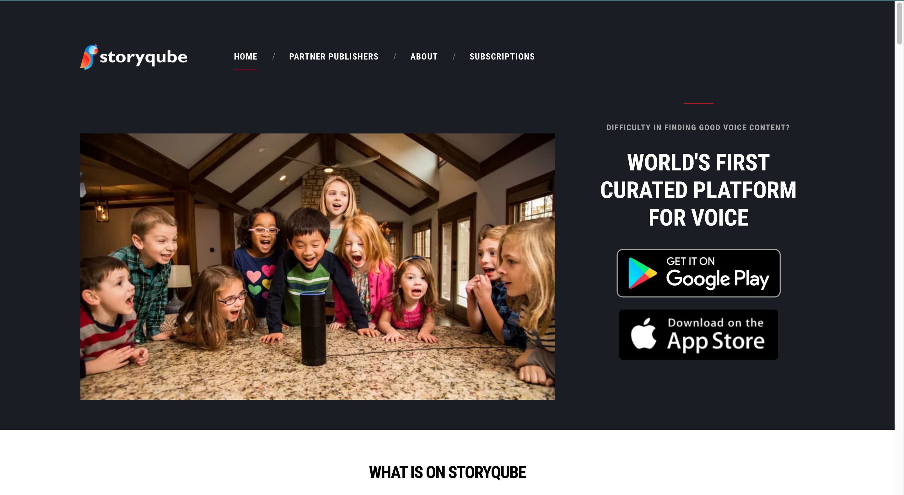
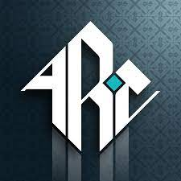

Python
C++
ROS
Arduino
CARLA
R
HTML
CSS
 |
Worked under Dr. Sanjit Kaul at the Networked Autonomous Systems Lab in the Autonomous Last Mile Vehicle (ALIVE) Project. Implemented a Pure Pursuit Controller in CARLA which allows the ego vehicle to accurately follow given trajectories and removed redundant steering by 90%.
|
|  | The internship focussed on creating an original Interactive Alexa game called 'Swallowed By The Sea'. I was responsible for writing the entire interactive script and creating the required architecture in nodeJS for the Alexa Skill to function as needed. |
 |
The Stanley Controller allows Rovers to autonomously move in smooth curves instead of point to point translation. The Kratos Mars Rover is designed by the students of BITS Goa to compete in various competitions. |
 |
(Academic Project) S&P 500 rates corporate bonds on a scale from AAA - C where AAA rated bonds rarely default but give low returns and C rated bonds are most likely to defualt while giving the highest returns. Using Markov Chains, I devised an algorithm that tells which rated bonds to invest in and for what period given their interest and default rates. |
 |
Incentrop is a website designed using HTML, CSS and JS where I post about things that pique my interest. Being a Science student, I don't want to box myself into just learning about Science and Engineering. Hence, this website gives me an incentive to learn about both Science and the Arts. |
 |
The CocaKhosla Channel is where I upload programming related videos. The videos aren't tutorials per se. They're essays that focus on WHY I did what I did and briefly mention HOW I did what I did. Through my YouTube Channel, I want to try make Programming appear fun and accessible. The MOST IMPORTANT thing is to HAVE FUN while you code. Otherwise, it's simply not worth it.
|
|  | Placed 2nd Overall at the Anatolian Rover Challenge held in Istanbul, Turkey. |
 |
Placed 1st in India and 2nd in Asia at the University Rover Challenge |